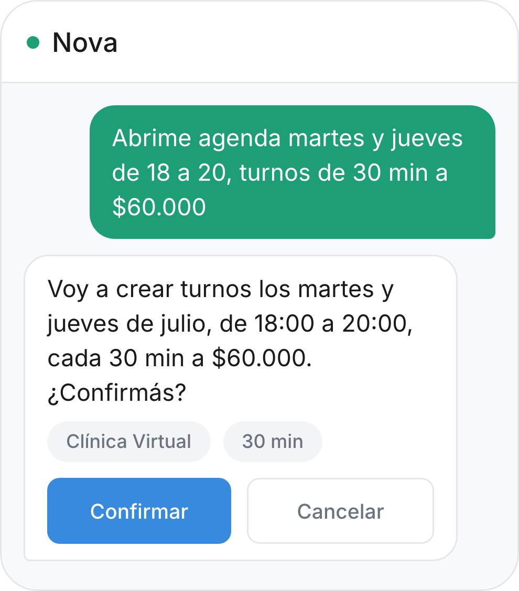

Nova, tu secretaria con IA, te ordena la agenda y Docto se encarga de la gestión. Tu energía, en lo que te gusta: tus pacientes.
Le hablás a Nova y arma los turnos por vos.
Docto te avisa cuando el paciente está listo. Vos solo tocás Iniciar.
La evolución se arma sola y queda guardada en la ficha del paciente.
Le decís cuándo y a cuánto querés atender. Nova crea los turnos.

Suena, aparece el aviso y entrás a la consulta de un toque.